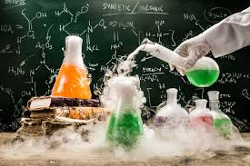

A student wondered how cement becomes hard, why metals rust, and how fuels power machines. The answers were found in Chemistry. Chemistry helps us understand the materials and reactions that make modern engineering, construction, and manufacturing possible.
Chemistry is the study of matter, its properties, composition, structure, and the changes it undergoes. It helps us understand the materials used in industries, engineering, medicine, agriculture, and technology.
Many students think Chemistry only happens in laboratories. In reality, Chemistry is involved in construction materials, fuel production, manufacturing, medicine, food processing, cosmetics, and countless products used every day.
This is only a small introduction. If you want to understand how programmes connect to university courses, careers, opportunities, and future success, get a copy of:
The guide designed to help students make informed decisions about their future and discover opportunities they may never have considered.